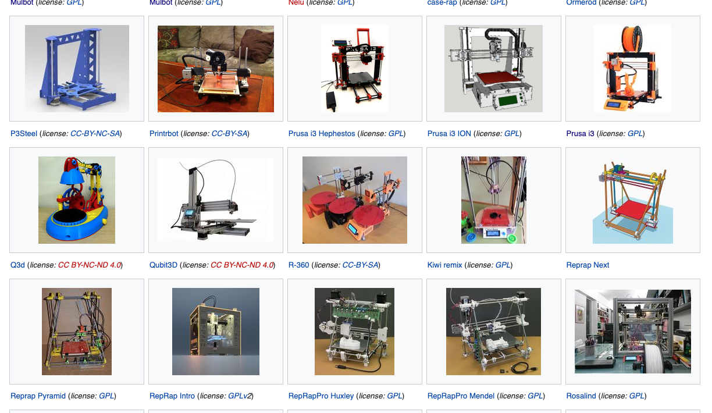
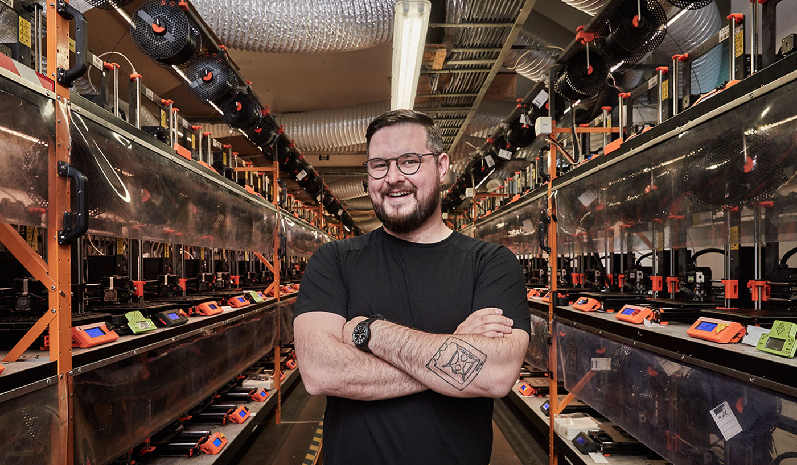
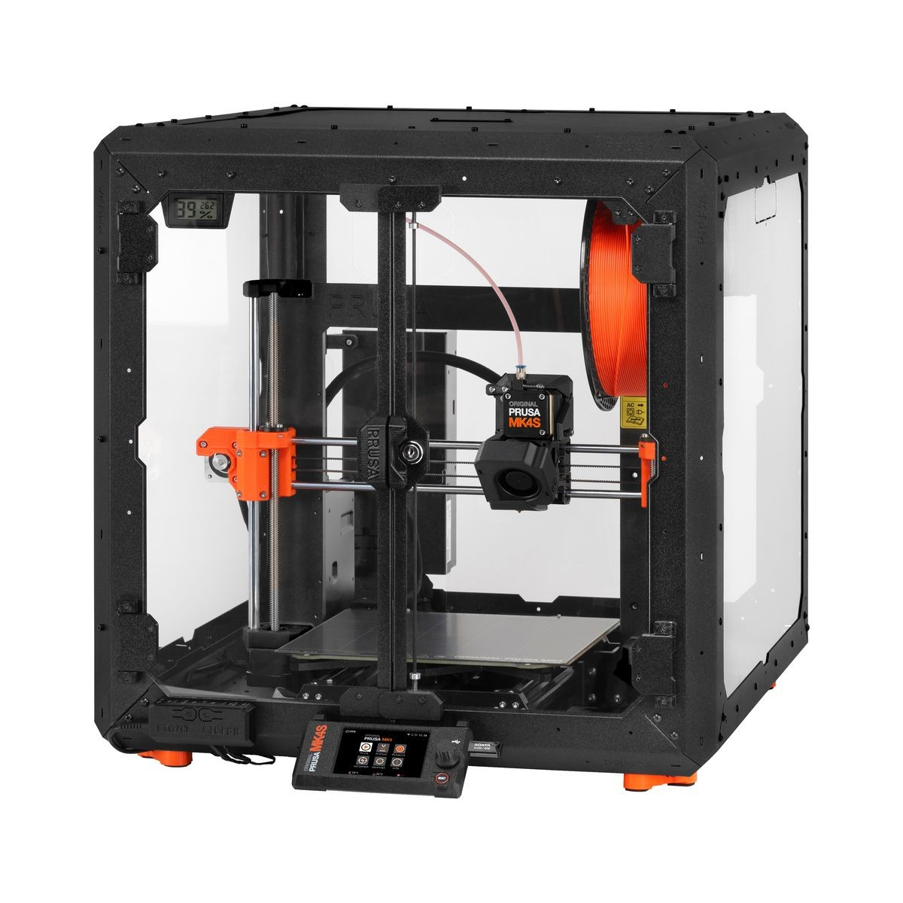

Short History of 3D Printer Movement#
3D printing is a manufacturing process known as additive manufacturing. There are roots of the process we now use going back to the 1960’s and 70’s. The first versions of modern 3D printing machines came into being in the late 1980’s and began to be manufactured in larger quantities through the 1990’s. The personal FDM (fused deposition modeling) printer movement is largely built on the work of Dr Adrian Bowyer and his colleagues through the RepRap (replicating rapid prototyper) project. A good summary of this history can be found here
RepRap Printers#
The 3D printers at the DPL Makerspaces are descended from RepRap printers. ReRap is an open source hardware project that provides guidance and files needed to build your own 3D printer from scratch. If you find you are intrigued by this project here is the RepRap project homepage. The image below shows a small sampling of the 3D printer projects that are documented on the RepRap site.
{kind=link}

Fig. 4 RepRap Machines#
Josef Prusa was invovled in the RepRap project relatively early and designed a number of variations of machines of which the i3 is one.
{kind=link}

Fig. 5 Josef Prusa#
The Prusa MK4 printers that we use in the DPL (Redmond) Makerspace are Prusa MK4S machines and are modeled on that original RepRap Prusa i3.
{kind=link}

Fig. 6 Prusa MK4S#
The work of the RepRap project along with evangelists like Josef Prusa has led to the remarkable accessibility of 3D printers, particularly FDM printers, for all of us. It is also a testament to the long commitment of these creators to the open hardware and open software movement. Even today Josef Prusa will provide you, from his business website, all the files you need to create and build your own 3D printer just like the MK4S. There are items like the motors, bearings, electronics and cables that you would need to buy as well but nothing stops you from doing that.